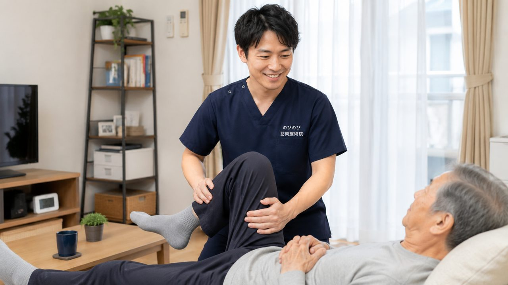

お尻から太もも、ふくらはぎへと走る痛みやしびれで、少し歩いては立ち止まる。座っていてもつらく、夜中に足がうずいて目が覚める。ご高齢のご家族がこうした坐骨神経痛に悩みながら、痛くて治療にも通いづらい、そんなときに知っておいてほしいのが、自宅で受けられる訪問鍼灸です。何ができて何ができないのか、どんなときはまず病院かを、正直にお伝えします。
この記事のポイント
坐骨神経痛は病名ではなく症状の名前で、背景に腰部脊柱管狭窄症や椎間板ヘルニアがあることもよくあります。鍼灸は、原因がはっきりして落ち着いた慢性期に、腰・お尻・脚のこわばりを和らげ血のめぐりを促す補助として役立ちます。医師の同意にもとづく医療保険で、1回総額3,950円、1割負担なら約395円が目安。急な足の脱力や排尿の異常があるときは、まず医療機関へ。効果には個人差があります。
「坐骨神経痛」は病名ではなく、症状の呼び名です
坐骨神経痛という言葉はよく耳にしますが、これ自体はひとつの病気の名前ではありません。腰からお尻の奥を通り、太ももの裏、ふくらはぎ、足先へと伸びていく神経が、どこかで刺激を受けたときに出る痛みやしびれ。その状態をまとめてこう呼んでいます。
ですから、同じ坐骨神経痛でも背景はひとりずつ違います。加齢にともなう背骨の変化が関わることもあれば、お尻の深いところにある筋肉のこわばりが神経を圧迫していることもあります。腰椎椎間板ヘルニアや脊柱管狭窄症といった原因の見極めは、画像や診察を持つ医療機関の領域です。当院は診断をする立場ではありません。原因ごとの詳しい話は、腰椎椎間板ヘルニアと足の痛み・しびれや脊柱管狭窄症・足のしびれと歩行の記事にゆずります。
座り続けるとつらい、立ち上がりの一歩が重い
坐骨神経痛のつらさは、じっとしているときにこそ顔を出します。椅子に長く腰かけていると、お尻の奥から太ももにかけて重だるさが広がってくる。デスクワークや長距離の移動が、以前ほど平気ではなくなる。
立ち上がる瞬間の一歩目も、この症状ならではの場面でしょう。体を起こそうとした途端、足の裏側に電気が走るような痛みが出て、思わず動きが止まる。歩き出してしまえば少し楽になる方もいれば、歩くほどにしびれが強まってくる方もいます。夜、横になってからふくらはぎのあたりがうずいて眠りが浅くなる。そんな声も少なくありません。しびれの範囲や出る時間帯は、その日の姿勢や冷えでも変わってきます。
先に主治医へ相談してほしいサイン
ただし、施術の前に確かめておきたいことがあります。両足が同時にしびれて力が入りにくい。尿や便が出にくい、あるいは我慢できない。痛みが日に日に強くなる。熱をともなう激しい痛みがある。こうした変化があるときは、まず主治医の受診を優先してください。安静にしても夜通し痛みが引かない場合も同じです。これらは鍼やマッサージで様子を見る段階ではなく、医師の判断が先に必要なサインです。
鍼灸・マッサージにできること、できないこと
できることから正直にお伝えします。お尻や腰、太ももの筋肉が張ると、その緊張が神経への刺激をさらに強めることがあります。硬くなった部分をゆるめ、血のめぐりをうながすことで、痛みやしびれの感じ方がやわらぐ方はいらっしゃいます。冷えの強い方には、お灸で温めながら進めることもあります。
一方で、できないこともはっきりしています。狭くなった神経の通り道を鍼で広げることはできませんし、飛び出した椎間板を元に戻すこともできません。施術は病気そのものを治すものではなく、日々を過ごしやすくするための手助けだとご理解ください。同じ施術でも、楽になる度合いは人によって差があります。
初回の見立てと、続けるうちの変化の見かた
はじめての施術では、時間をかけてお話をうかがいます。痛みが出るのはどこか。どんな姿勢でつらくなり、どうすると楽になるのか。実際に触れて、筋肉の張りや冷え、めぐりの状態を確かめます。
二回目以降は、しびれの届く範囲や夜間の痛みがどう動いたかを目印に、間隔を調整していきます。国家資格を持つ施術者がうかがい、寝返りや起き上がりといった動作をたすける機能訓練も鍼灸に加えるケアとして行っています。別の給付として上乗せするものではありません。必要に応じて、経過を主治医やケアマネジャーと共有します。
費用と保険のしくみ
費用は1回の総額が3,950円です。医療保険の療養費として受ける場合、自己負担の割合に応じて、1割の方でおよそ395円が目安になります。週2回のペースで受けると、1割の方で月およそ3,160円。お住まいがどこでも、この金額は変わりません。
受けるには医療保険に加えて医師の同意書が必要ですが、要介護認定は要りません。介護保険の限度額とは別の枠で計算されるため、デイサービスやヘルパーと組み合わせても、限度額を圧迫することはありません。保険の対象になるのは、神経痛・リウマチ・頸肩腕症候群・五十肩・腰痛症・頸椎捻挫後遺症の6つが代表的なところで、坐骨神経痛は医師が神経痛や腰痛症として治療の必要を認めたときに対象になりえます。なお、同じ部位について整形外科で医療保険のリハビリを受けている間は、鍼灸を同時に算定できません。料金の考え方は「長引く腰痛症は保険の対象？」でもう少し詳しく触れています。
訪問という選び方と、家での過ごし方
歩くのがつらい時期に、痛みをこらえて通院するのは本末転倒になりかねません。訪問であれば、待合室の椅子に座って順番を待つことも、移動そのものの負担もありません。ご自宅の、いちばん楽な姿勢で受けていただけます。
受ける回数は週1回から3回ほどの方が多く、症状の落ち着き具合を見ながら間隔をあけていきます。1回はおおむね20分から30分。ふだんの暮らしでは、体を冷やさないこと、痛みの出ない範囲で足首をゆっくり動かすことを心がけてみてください。同じ姿勢が長く続いたと感じたら、少し体勢を変える。痛みの強い日は無理をせず休む。それだけでも、翌日の楽さが違ってくることがあります。
訪問先でうかがったお話
施術を続けている方から、「この前でも腰が軽くなったってびっくりしましたよ」「2日ぐらい楽してました」というお話をうかがったことがあります。ご本人が感じておられる範囲のことで、感じ方には個人差がありますし、楽になる要因はその日の体調や過ごし方、ほかに受けている医療やお薬とも重なります。それでも、変化があった日となかった日の差がご自分でわかるようになると、次にどう過ごすかの手がかりになります。施術のあとをどう過ごせたか、毎回うかがって次の組み立てに反映しています。
よくある質問
坐骨神経痛でも保険で受けられますか？
腰から足の慢性的な痛み・しびれについて、医師が必要と認め、通院がむずかしい場合は対象になることがあります。まず整形外科などで診てもらってください。同意書の手続きはこちらでお手伝いします。
何回くらいで楽になりますか？
体の状態によって差があり、数回で変化を感じる方もいれば、じっくり続けて少しずつという方もいます。まず状態を見せていただいたうえで見通しをお伝えします。曖昧な期待をあおるようなことはしません。効果には個人差があります。
坐骨神経痛のしびれも和らぎますか？
腰やお尻、太ももの裏のこわばりを和らげ、めぐりを促すことで、しびれの感じ方が変わる方がいます。ただし神経の圧迫そのものを取り除くものではありません。強いしびれが続くときは受診をおすすめします。
急に足に力が入らないのですが、来てもらえますか？
力の入りにくさや、尿・便が出にくい・漏れるといった症状があるときは、鍼灸より先に急いで受診してください。原因がはっきりして落ち着いてから、動ける範囲を保つケアとしてお伺いします。
歩くのがつらくても来てもらえますか？
はい。ご自宅へ伺うので、出かける負担なく受けられます。待合室で座って待つ必要も、バスの乗り降りもありません。いちばん楽な姿勢のまま施術します。
痛み止めを飲んでいますが、鍼灸と併用して大丈夫ですか？
多くの場合は問題なく併用できますが、飲んでいるお薬は事前に教えてください。整形外科などで同じ腰の治療を受けている場合は保険の扱いに決まりがあるので、状況をうかがったうえで無理のない形をご案内します。
介護保険の限度額を使い切っていても受けられますか？
受けられます。訪問鍼灸は医療保険で計算するため、介護保険の区分支給限度額とは別枠です。デイサービスやヘルパーを利用中の方も、その枠とは別に続けられます。
1回いくらで、月にどれくらいかかりますか？
1回の施術は総額3,950円で、1割負担なら約395円です。月の目安（1割）は週1回でおよそ1,580円、週2回でおよそ3,160円。別途の出張費はかからず、エリア内は同額です。お支払いは月ごとにまとめていただき、明細をお渡しします。